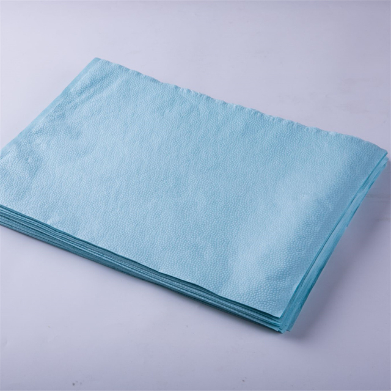

Patient hygiene is one of the most frequent bedside procedures in hospitals, nursing homes, and long-term care facilities. A complete bed bath is performed multiple times per day for each dependent patient, and the product choices involved — what is used to wash the patient's skin, what solutions are applied, and how waste is handled — have far-reaching implications for infection control, staff efficiency, patient comfort, and environmental sustainability.
Disposable washcloths have emerged as the preferred alternative to traditional reusable cotton washcloths in many clinical settings. They offer a single-use, contamination-controlled solution that reduces healthcare-associated infection (HAI) risk, streamlines nursing workflows, and provides consistent quality for every patient encounter. For procurement managers, infection control committees, and facility administrators, understanding the full value proposition of disposable washcloths is essential for making evidence-based purchasing decisions.
The Problem with Traditional Reusable Cotton Washcloths
Traditional cotton washcloths have been used in healthcare for decades. They are inexpensive to purchase in bulk, familiar to nursing staff, and can be laundered and reused hundreds of times. However, their drawbacks in clinical settings are significant and well-documented:
- Cross-contamination risk. Even when laundered at recommended temperatures, reusable washcloths can harbour residual microorganisms. Studies have shown that washcloths used on one patient can transfer pathogens to surfaces, equipment, and other patients if not handled and stored correctly. In multi-patient wards, the risk of cross-transmission is particularly acute.
- Laundering variability. The cleaning efficacy of a reusable washcloth depends on water temperature, detergent quality, wash cycle duration, and drying conditions. In busy facilities, laundering standards may not be consistently maintained, leading to variable hygiene outcomes.
- Water and chemical consumption. Washing and drying reusable washcloths consumes significant water, energy, and chemical detergents. For a 200-bed facility performing two bed baths per patient per day, the cumulative resource consumption is substantial.
- Staff time burden. Nurses must prepare soap-and-water solutions, rinse and wring washcloths, and dispose of contaminated water after each bed bath. This adds 5-15 minutes of preparation and cleanup time per patient encounter.
- Patient skin irritation. Repeated use of soap and water on fragile, elderly, or compromised skin can cause dryness, irritation, and skin breakdown — particularly in patients with incontinence, diabetes, or peripheral vascular disease.
These challenges have driven a growing shift toward premoistened disposable washcloths that eliminate the need for soap, water, and laundering while providing a controlled, consistent cleansing experience for every patient.
Fabric Construction: Non-Woven Materials for Skin Contact
Disposable washcloths are manufactured from non-woven fabrics engineered for softness, absorbency, and strength. The choice of substrate directly affects cleansing performance, patient comfort, and cost:
Spunlace (Hydroentangled) Non-Woven Fabric
Spunlace is the premium choice for washcloth substrates. High-pressure water jets entangle fibres to create a fabric that is soft, strong, and highly absorbent:
- Cloth-like softness. Spunlace feels closest to traditional cotton, providing a gentle cleansing experience that patients find comfortable, particularly during full bed baths.
- High wet strength. The hydroentanglement process creates a durable fabric that does not tear or pill when wet, even with vigorous scrubbing.
- Excellent solution retention. Spunlace holds premoistening solutions (cleansers, moisturisers, or CHG) evenly across the fabric surface, ensuring consistent application with each wipe.
- Low linting. Unlike cotton, spunlace produces minimal lint, which is important for patients with respiratory sensitivity and for maintaining clean environments in intensive care settings.
Airlaid Non-Woven Fabric
Airlaid fabric is made by dispersing wood pulp fibres in an air stream and bonding them with latex or thermal binders. It offers:
- Superior absorbency. Wood pulp fibres absorb and retain large volumes of cleansing solution, making airlaid washcloths effective for thorough cleansing.
- Cost advantage. Airlaid is typically less expensive than spunlace, making it attractive for high-volume, budget-conscious procurement.
- Bulkier texture. Airlaid has a thicker, more textured feel that some patients and staff prefer for more vigorous cleansing tasks.
Blended Spunlace-Airlaid Composites
Some manufacturers combine spunlace and airlaid layers to optimise both softness and absorbency. These composites offer a balanced performance profile at a mid-range price point and are increasingly popular in the hospital supply market.
Types of Disposable Washcloths
Dry Disposable Washcloths
Unmoistened non-woven washcloths that are used with a cleansing solution of the facility's choice. They offer:
- Flexibility. Facilities can choose their preferred cleansing solution, moisturiser, or medicated wash independently.
- Lower per-unit cost. Dry washcloths are less expensive than premoistened alternatives.
- Longer shelf life. Without moisture content, dry washcloths do not have expiration-date concerns related to solution degradation.
- Additional preparation step. Staff must wet and prepare the washcloth before use, adding time to the hygiene routine.
Premoistened Washcloths
Washcloths pre-saturated with a gentle cleansing solution, typically packaged in resealable canisters or individual pouches:
- Ready to use. No preparation required — staff remove a cloth from the package and begin cleansing immediately.
- Consistent solution dosing. Each cloth contains a measured amount of cleansing solution, ensuring uniform application across patients and shifts.
- Built-in moisturisers. Many premoistened washcloths include aloe vera, vitamin E, or other skin-conditioning agents that reduce dryness and irritation, particularly important for elderly patients with fragile skin.
- Higher per-unit cost, lower total cost. When the cost of soap, water, preparation time, and laundry is factored in, premoistened washcloths often deliver comparable or lower total cost per bed bath.
CHG-Impregnated Washcloths
Chlorhexidine gluconate (CHG) is a broad-spectrum antiseptic widely used in hospitals for pre-operative skin preparation and central line insertion site care. CHG-impregnated washcloths combine cleansing with antimicrobial action:
- 2% CHG concentration. Most hospital-grade CHG washcloths contain 2% chlorhexidine gluconate, the concentration shown to be effective at reducing skin bioburden and healthcare-associated infection rates.
- Pre-surgical bathing. Many surgical protocols now require patients to bathe with CHG washcloths the night before and morning of surgery to reduce skin flora and lower surgical site infection risk.
- ICU daily bathing protocols. Evidence-based guidelines in many healthcare systems recommend daily CHG bathing for ICU patients to reduce central-line-associated bloodstream infections (CLABSIs) and ventilator-associated events.
- Residual antimicrobial activity. CHG binds to the stratum corneum and provides persistent antimicrobial activity for several hours after application, offering ongoing protection between washes.
- Skin compatibility monitoring required. While generally well-tolerated, CHG can cause contact dermatitis or allergic reactions in a small percentage of patients. Facilities should monitor for adverse reactions and have alternative products available.
Infection Control Advantages
The infection control case for disposable washcloths is compelling and supported by a growing body of peer-reviewed evidence:
- Elimination of reusable textile vectors. Each disposable washcloth is used once and discarded, removing a potential fomite (contaminated object) from the patient environment. Reusable washcloths, even when laundered, have been implicated in HAI transmission pathways.
- Reduced environmental bioburden. Single-use washcloths prevent the accumulation of microorganisms in washcloth storage areas, laundry carts, and linen rooms — common reservoirs for opportunistic pathogens such as Clostridioides difficile (C. diff), methicillin-resistant Staphylococcus aureus (MRSA), and vancomycin-resistant Enterococcus (VRE).
- Standardised infection prevention. Every disposable washcloth provides the same level of cleanliness and (for CHG products) antimicrobial efficacy, regardless of which staff member performs the bed bath or when it occurs.
- Simplified waste management. Used washcloths are disposed of as general or clinical waste, depending on facility protocols. There is no need to manage contaminated linen transport, sorting, and reprocessing workflows.
"Since transitioning to premoistened disposable washcloths for all ICU patients, we have observed a measurable reduction in skin-related complications and a decrease in nursing time spent on bed bath preparation. The consistency and convenience have been genuinely transformative for our daily workflow." — Infection Prevention Lead, Regional Medical Centre
Compliance and Regulatory Considerations
When procuring disposable washcloths — particularly CHG-impregnated products — verify the following compliance requirements:
- FDA registration (USA). CHG-containing washcloths are classified as over-the-counter (OTC) drug products in the United States and must be manufactured in FDA-registered facilities that comply with current Good Manufacturing Practice (cGMP) requirements.
- CE marking (EU). In the European Union, CHG washcloths may be classified as medical devices or biocidal products depending on their intended use and claims. Verify CE marking and applicable regulatory pathway before import.
- Biocompatibility testing. Non-CHG washcloths should comply with ISO 10993 biocompatibility standards for skin contact, including tests for cytotoxicity, sensitisation, and skin irritation.
- ISO 13485 quality management. Manufacturers operating under ISO 13485-certified quality systems demonstrate consistent production standards, traceability, and post-market surveillance capabilities.
- Dermatological testing. Reputable manufacturers provide dermatological test results confirming skin compatibility, particularly for products intended for use on fragile, elderly, or compromised skin.
- Environmental claims validation. If a manufacturer claims biodegradability, compostability, or eco-friendly attributes, request supporting test data (e.g., EN 13432 for industrial compostability) to verify these claims.
Cost Analysis: Disposable vs. Reusable Washcloths
A thorough cost comparison should account for all direct and indirect factors:
| Cost Factor | Reusable Cotton | Disposable Washcloths |
|---|---|---|
| Per-unit purchase price | Low (£0.10-0.30) | Higher (£0.15-0.60) |
| Laundering cost per cycle | £0.15-0.40 | N/A |
| Soap and water | £0.05-0.10 per bath | Included (premoistened) |
| Staff preparation time | 5-15 minutes per bath | Near zero |
| Linen management overhead | Significant (sorting, transport, storage) | Minimal |
| HAI-related costs | Higher risk profile | Lower risk profile |
| Environmental impact | Water, energy, chemical use | Single-use waste volume |
When total cost of ownership is calculated — including labour, utilities, linen management, and infection-related costs — many facilities find that disposable washcloths are cost-competitive or even cost-saving, particularly in high-volume settings such as ICUs, surgical wards, and long-term care facilities.
Procurement Best Practices
- Assess clinical needs by department. ICU and surgical wards may benefit most from CHG-impregnated washcloths, while general medical wards may be well-served by standard premoistened washcloths. Dry washcloths are a cost-effective option for departments that prefer to use their own cleansing solutions.
- Request samples for staff evaluation. Have nursing staff test different fabric types, moisture levels, and scents before committing to a large order. Staff acceptance is the single most important factor in successful product transitions.
- Verify shelf life and storage requirements. Premoistened and CHG washcloths typically have a shelf life of 2-3 years. Ensure packaging is designed for your storage environment and that canisters maintain moisture integrity over time.
- Evaluate packaging format. Canisters (pop-up dispensers) are convenient for bedside use but may dry out if not properly sealed. Individually wrapped pouches are ideal for emergency carts, ambulances, and travel kits but generate more packaging waste.
- Consider environmental alternatives. If sustainability is a priority, inquire about washcloths made from biodegradable non-woven fabrics or those manufactured with reduced packaging. Request documentation to support any environmental claims.
- Qualify multiple suppliers. As with all essential consumables, maintain at least two qualified suppliers to mitigate supply chain disruption risk. The COVID-19 pandemic demonstrated the importance of diversified sourcing for healthcare consumables.
Why Choose Newrise Medical
Newrise Medical supplies a range of disposable washcloths for healthcare and personal care applications, including dry non-woven washcloths in spunlace and airlaid substrates, premoistened washcloths with gentle cleansing solutions and skin-conditioning agents, and bulk-pack options for hospitals, nursing homes, and home-care providers. All products are manufactured under ISO 13485 certified quality management systems, ensuring consistent quality, reliable supply, and full traceability.
We offer OEM and ODM options for distributors and brands seeking private-label solutions, including custom fabric compositions, moisture levels, scents, and packaging formats. Whether you need dry washcloths for general ward use or premoistened wipes for premium patient care packages, Newrise Medical provides competitive pricing, flexible minimum order quantities, and responsive technical support to healthcare facilities and distributors worldwide.